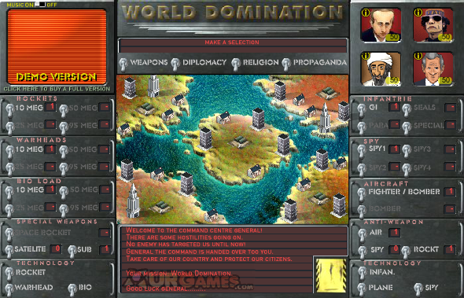

Experience after playing a flash game
So I was playing this game recently (URL says it all). Here's a screenshot:

I had 4 opponents (listed left to right, top to bottom on the screen in top right corner):
- Vlodimar Pitun
- Col. Kodoffi
- Osumo Ben Lada
- G. W. Bash
Let's leave it for the game creators to decide why names of some characters in their game resemble names of real people. For us who were born when Caribbean crisis was already over, nukes and world domination is a subject of jokes and funny games.
And that's how the game rolled:
- Since the very beginning of the game, Kodoffi and Ben Lada were shooting rockets at each other, and we with mr. Pitun nuked away G. W. Bash.
- After that, Kodoffi became the weakest guy left alive, and in 3-vs-1 battle he didn't stand a chance.
- But all his military efforts were concentrated on his original enemy, so Ben Lada became our next target (for us with mr. Pitun).
- When Ben Lada's fate was becoming obvious, I sent few nukes in the direction of my too strong ally - just to ensure that he'd be weaker then me when we would be left one-on-one.
- And after that I got into a long propaganda war with mr. Pitun, because nukes are pretty useless in one-to-one combat.
Total time spent: 2 hours.